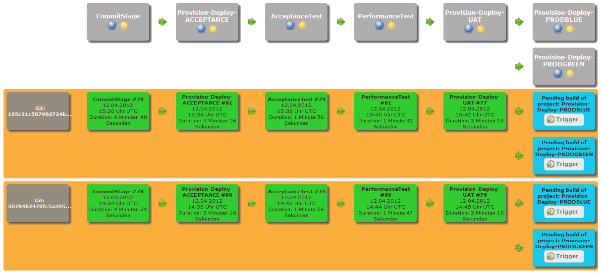
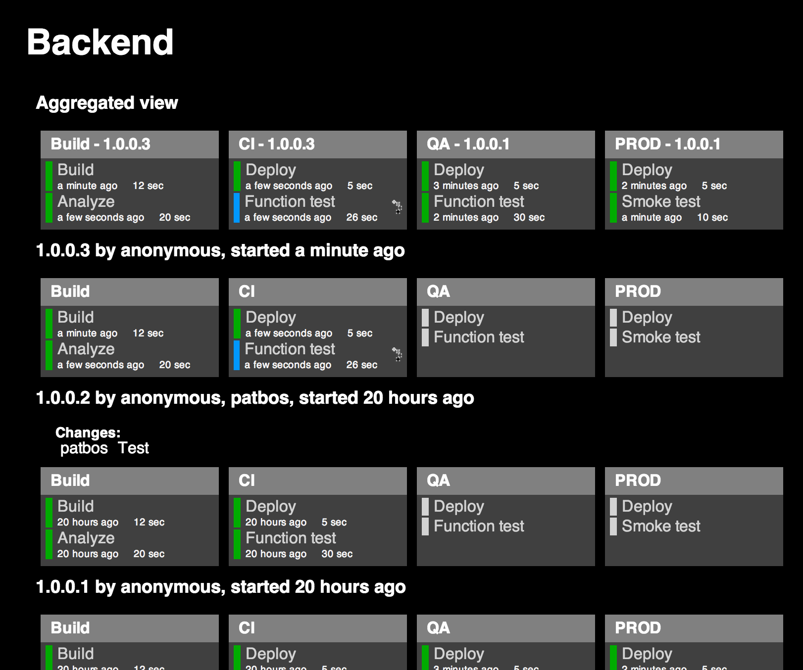
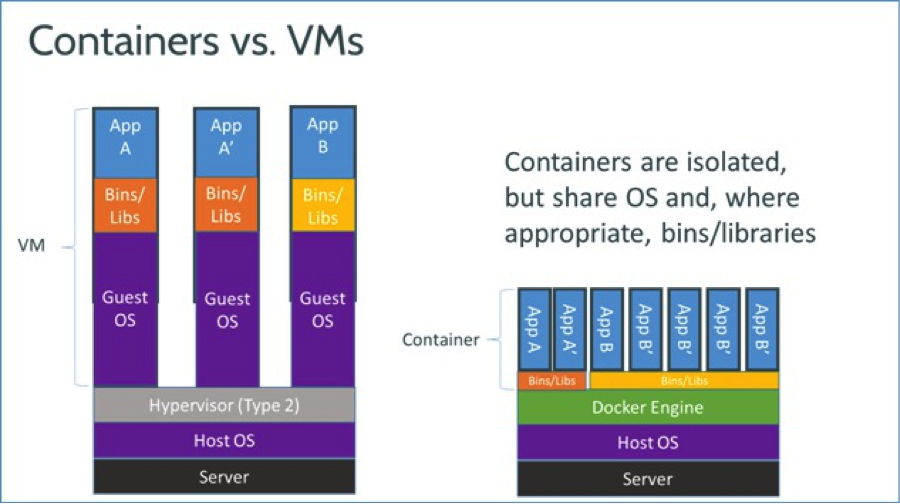
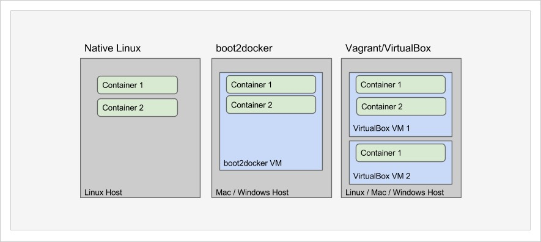

Dockerizing Pipelines


Paul Dragoonis
- From Glasgow (a weegie :-)
- Full-Stack Software Consultant
- Quality Assurance Engineer
- @dr4goonis / paul@dragoonis.com
Analyse and influence on quality of
- code quality
- environmental quality (local, staging, prod)
- Behavioural-driven-development
- continuous integration pipelines
- security / scaling
- continuous deployment / rollback quality
Analyse and influence on quality of
- Involved with PHP-FIG
- PHP core / extensions, php.net (modernisation)
- Lead developer of PPI Framework Engine (ppi.io)
- Using PHP since 2001, Using Docker Since 2016 (January)
Continuous Integration
Automation of commands
Automation
ps aux | grep java | grep -v grep | awk '{print $2}' | xargs kill
while read in; do host "$in"; done < sites.txt | grep -iv "GOOGLE" | grep -E '1\.2\.3\.4|5\.6\.7\.8' | sed -e 's/has\ address\ 216.70.91.72//' | sed -e 's/has\ address\ 94.23.33.92//' | while read sites; do curl -sL -w "%{http_code} %{url_effective}\\n" "$sites" -o /dev/null; done | grep -ivE '4.*|5.*' | sed -e 's/200//' | sed -e 's/HTTP/http/'
Automation
kill-java.sh
find-google-referrers.sh > google-referrers.txt
cron entry for: order-curry-from-just-eat.sh ;-) <3 selenium
Continuous Deployment
vs
Continuous Delivery
Continuous Delivery
your pipline builds continuously
but, you decide when you want to push the big red button
Continuous Deployment
your pipline builds continuously
once you have a green build, it promotes and goes to production with no manual intervention
What is a pipeline?
results moving through a series of steps from one side to the other.
What does a pipeline consist of?
- jobs, lots of jobs!
- that have their own single responsibility
What to put in your pipeline
- Quick initial checking
- lint checking
- unit tests
Perform thorough testing
- integration tests
- acceptance
- end-to-end testing
- security testing
- stress testing
Linking your pipeline together
Triggers
(sequencing of the pipeline)
- downstream triggers - what to trigger next
- upstream triggers - what to trigger before running current one
Kicking off your pipeline
- Commit triggered pipelines
- Manually triggered(parameterised) pipelines
Managing the Pipline
Build Pipeline Plugin

Delivery Pipeline Plugin

Maintaining your pipeline/jobs
JobDSL Plugin
job('BUILD') {
scm {
git('git://github.com/jenkinsci/job-dsl-plugin.git')
}
logRotator {
numToKeep 5
}
steps {
shell('build.sh')
}
}
JobDSL Plugin
job('UNIT TESTS') {
scm {
git('git://github.com/jenkinsci/job-dsl-plugin.git')
}
steps {
shell('run-unit-tests.sh')
}
}
JobDSL Plugin
job('INTEGRATION TESTS') {
scm {
git('git://github.com/jenkinsci/job-dsl-plugin.git')
}
steps {
shell('run-integration-tests.sh')
}
}
JobDSL Plugin
job('ALL TASKS') {
scm {
git('git://github.com/jenkinsci/job-dsl-plugin.git')
}
steps {
shell('build.sh')
shell('run-unit-tests.sh')
shell('run-integration-tests.sh')
shell('save-artifacts.sh')
shell('publish-image.sh')
shell('cleanup.sh') <-- always run this, to keep the server from falling over
}
}
JobDSL Plugin
folder('project-a')
deliveryPipelineView('project-a-deliver-pipeline')
buildPipelineView('project-a-build-pipeline')
buildMonitorView('project-a-build-monitor')
Problems with standlone Jenkins
Scaling is hard, one slave per machine
One environment for your all your jobs, installed directly onto the jenkins host
CI env inconsistent from dev/staging/prod
Docker to the rescue

Docker to the rescue
Easy to change the infrastructure, in your app's repo
UNIFIED ARCHITECTURE
What is docker?


Docker on different OS

Docker Hub (official registry)

Overview of docker pipeline

Overview of docker pipeline

Docker Jenkins Plugin

Docker Jenkins Plugin
connects to any host running docker
creates an isolated environment for your jobs
runs your jobs inside it
spins down isolated environment
Show and Tell Time!
Thank you London!
- @dr4goonis / paul@dragoonis.com
- Available for hire, get in touch!